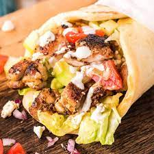

chicken shawarma recipe

Ingredients for the marinade
- 1 tsp ground cumin
- ½ tsp turmeric
- ½ tsp smoked paprika
- ½ tsp black pepper
-
- ¼ tsp ground coriander
- 2 cardamom pods, seeds removed and ground
- ¼ tsp cinnamon powder
- ¼ tsp ground ginger
- ¼ tsp ground nutmeg
- ½ tsp salt
- 2 tbsp lemon juice
- 2 tbsp olive oil
- 2 garlic cloves, peeled and crushed
To serve (all optional)
- Flatbreads
- Toum or tahini sauce
- Zhoug or chilli sauce
- Brined vegetables and/or chopped cucumber, tomato and onion
Chopped parsley
How to cook and serve
- Bash out the chicken until it's all of a fairly even thickness.Put a small pan on a medium heat, then add the ground spices and toast until fragrant.Toast the spices.
- Whisk into the remaining marinade ingredients whisk the spices into the lemon juice and oil.
- then rub the mix all over the chicken and put in a sealed container in the fridge for between three and eight hours.
- Marinate the chicken for at least three hours.
- Cut the chicken into thin strips, then thread one end of each strip on to a metal skewer.
- Put a second skewer through the other end of each strip, and push the strips down to the far end of the skewers, so they're tightly packed.
- Thread the marinated chicken on to the skewers.Heat the grill to medium and find a tray over which you can balance the skewers so they're suspended rather than touching the base.
- Grill for five minutes, then turn over and grill for another five minutes the chicken should be charred and cooked through. Grill the skewers.
- Rest the chicken in its own juices to cool down a little while you heat any breads and prepare the accompaniments, then serve immediately.
Return to top
Return to Main